One workspace for  DuckLake
DuckLake
DuckLake UI, SQL Editor, SQL Notebooks, cloud storage, and analytics workflows inside dbt Studio.
Meet dbt Studio: a desktop workspace for modern data teams. Manage DuckLake lakehouses, connect to cloud storage, explore metadata, query data, and build notebook workflows without jumping between tools.
DuckLake UI
SQL Editor
SQL Notebooks
Cloud Data


Build, query, manage, and explore your lakehouse
A practical desktop workspace for modern data teams.
dbt Studio brings data lake management, SQL exploration, notebooks, cloud storage, database connections, and AI-assisted analytics into one desktop experience. Under the hood, it uses @duckdb/node-api, the DuckDB Node.js API, to connect to DuckDB and power DuckLake workflows through DuckDB's DuckLake extension.
DuckLake
DuckDB
Data work is still too fragmented
Database clients. Cloud consoles. SQL tabs. Notebooks. File explorers. dbt Studio brings the workflow into one focused place.
Data teams should be able to move from connection setup to analysis and lakehouse operations without constantly switching applications.

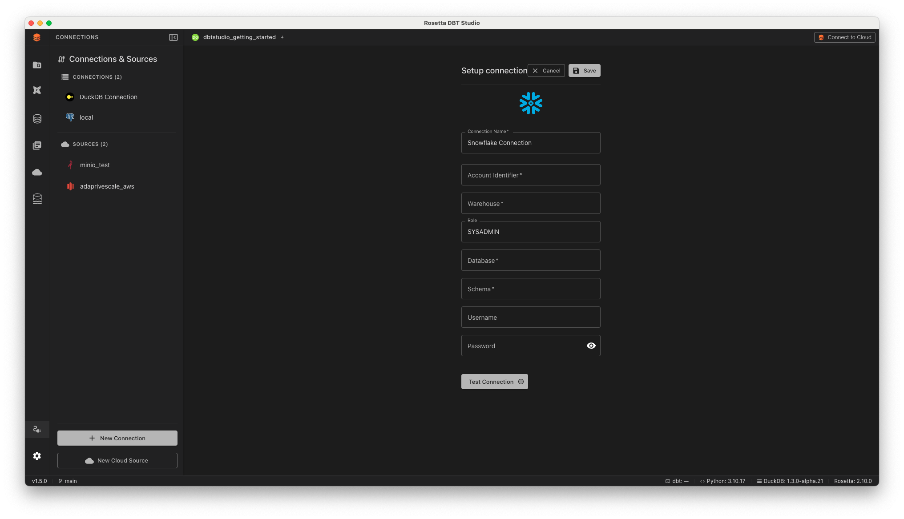
Database connections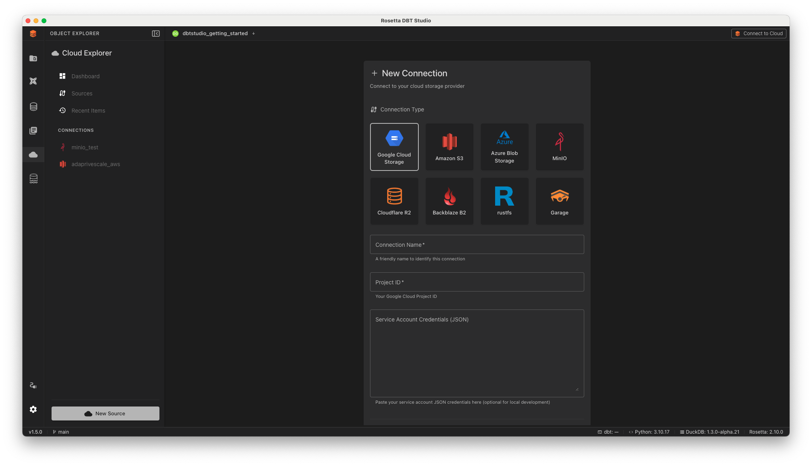
Object storage Unified list
Unified list
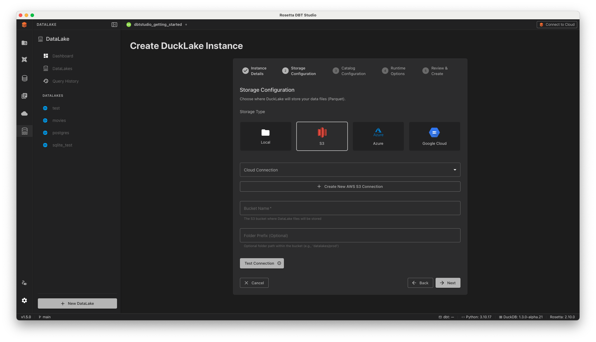
Reuse in DuckLakeConnect databases and cloud storage
Save connections once, then reuse them across Cloud Explorer, DuckLake creation, SQL workflows, and notebooks.
dbt Studio supports database connections and cloud object storage, including S3-compatible storage, Azure Blob, and Google Cloud Storage. Saved cloud connections can be reused when creating new DuckLake instances or importing existing DuckLakes.
Guided DuckLake instance setup
Create new lakehouse instances or import existing DuckLakes with clear steps for catalog, storage, runtime options, and review.
The DuckLake setup flow guides you through instance details, catalog configuration, storage location, runtime options, and final review, whether you are starting fresh or connecting to an existing DuckLake.

Catalog, storage, runtime, review
Create a new DuckLake or import an existing one by connecting the metadata catalog and data storage. Keep the catalog separate from the data files, matching the way DuckLake is designed to work.
 Catalog configuration
Catalog configuration
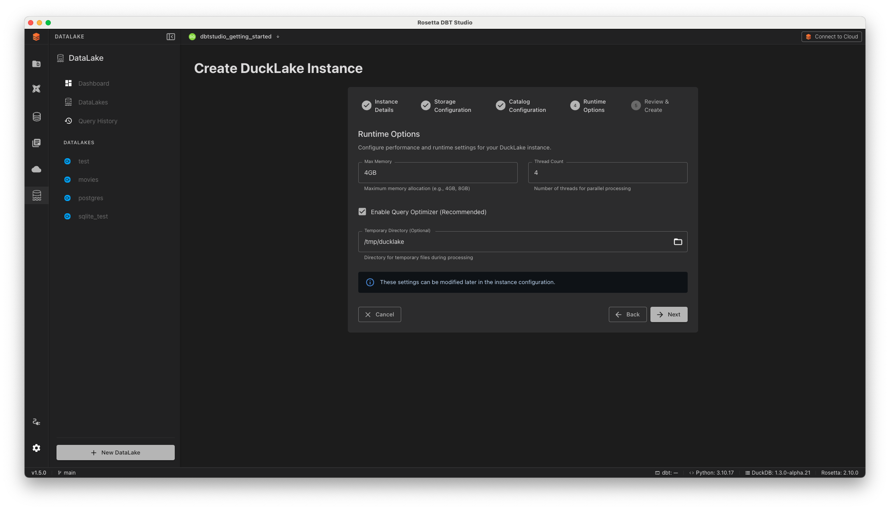
Runtime options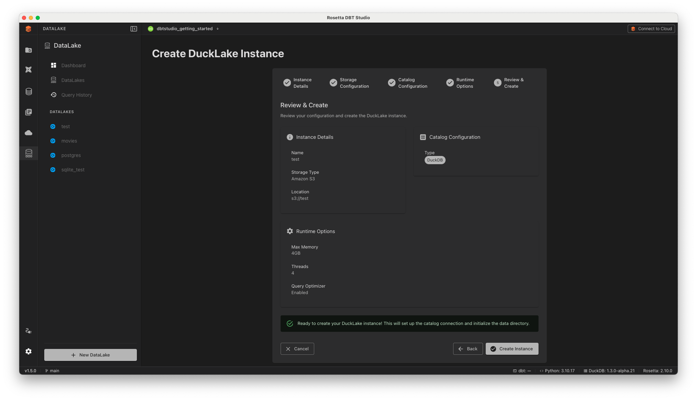
Review and create
A visual control center for DuckLake
Understand what is inside the lakehouse, not just query it.
Browse tables and views, inspect schemas, review statistics, see Parquet data files, examine partitions, and follow snapshot history from a single visual workspace.
Tables, schemas, files, partitions, snapshots
dbt Studio gives teams a practical way to understand table structure, storage layout, file-level metadata, statistics, and change history inside the lakehouse.
 Tables and views
Tables and views
 Schema
Schema
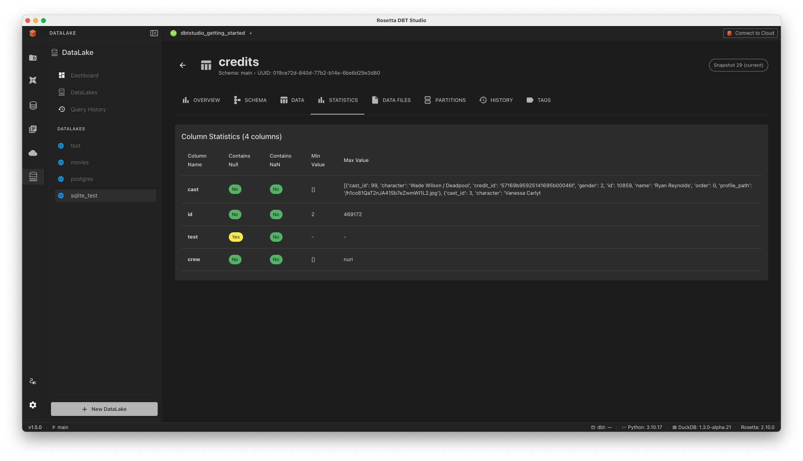
Statistics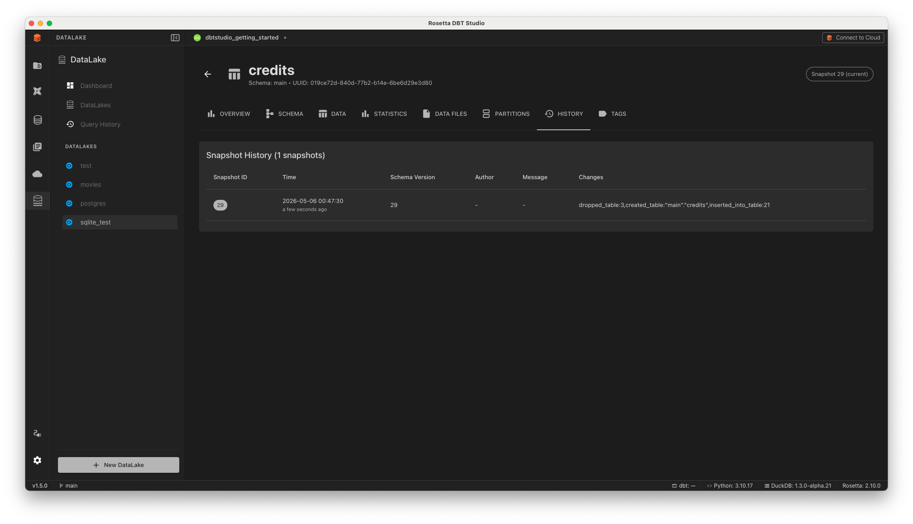
Snapshot historyReal table operations, guided in the UI
Schema evolution, data changes, imports, and exports without dropping into disconnected command workflows.
The DuckLake UI supports operational workflows such as adding columns, renaming columns, changing types, updating rows, deleting rows, and importing data from storage or URLs.
 Add column
Add column
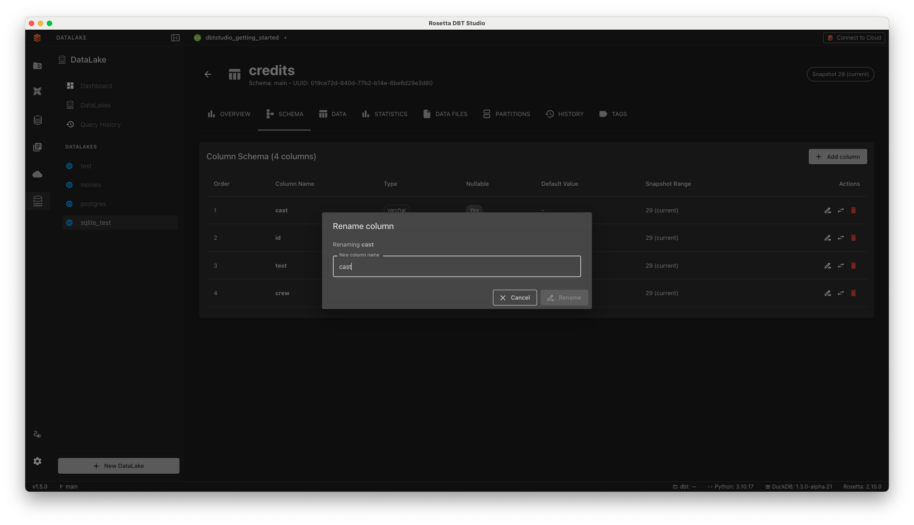
Rename column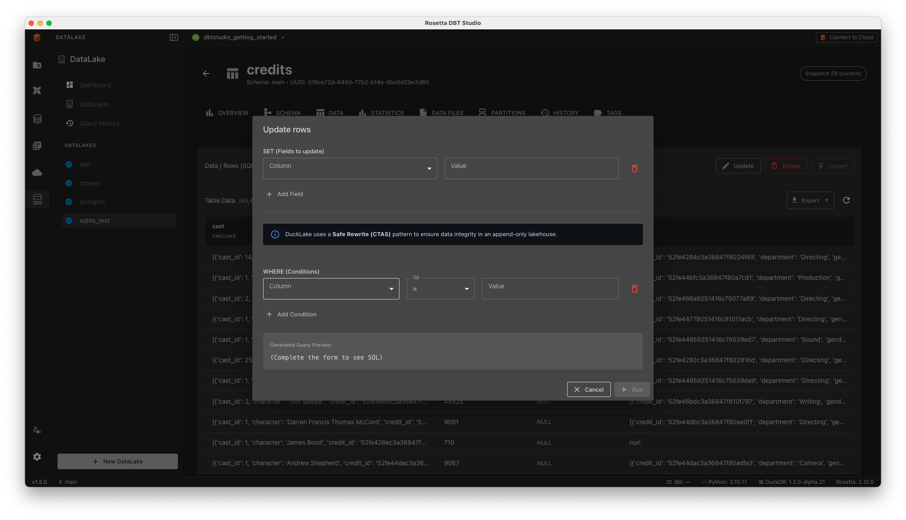
Update rows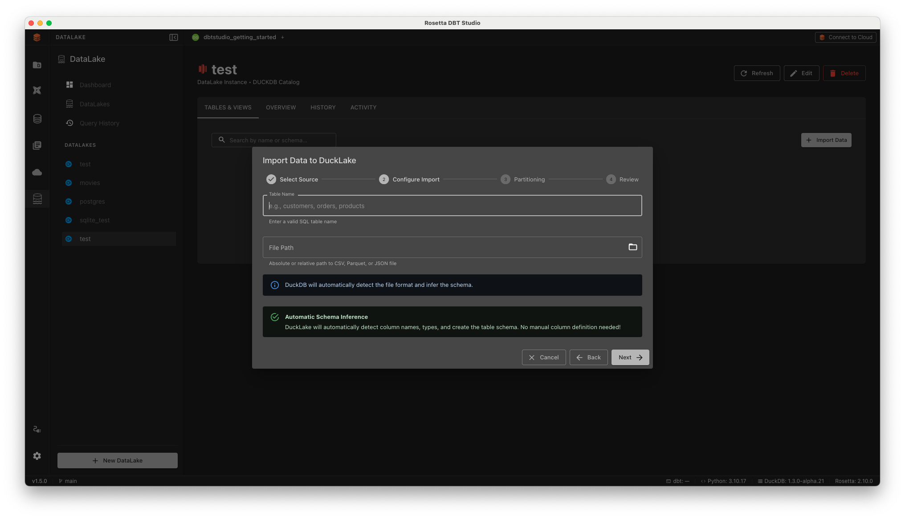
Import from storage
Query DuckLake directly in the SQL Editor
Browse schemas, write SQL, preview results, paginate large data, and export full datasets.
Select a DuckLake instance, browse schemas, get Monaco-powered autocomplete for tables and columns, run queries, page through large results, and export to CSV, JSON, or Parquet.
Schema, autocomplete, results, export
DuckLake instances appear alongside regular database connections, so the same SQL Editor workflow can handle metadata browsing, query execution, pagination, and full-dataset export.
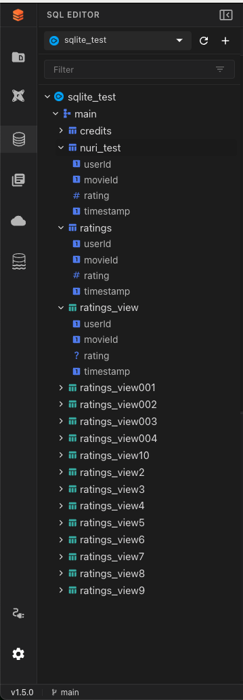
Schema browser Autocomplete
Autocomplete
 SQL assistance
SQL assistance
 Preview and export
Preview and export
Repeatable analysis with SQL and Markdown
Create reusable notebooks, run cells, keep results paginated, and document the work as you go.
SQL Notebooks provide a cell-based workflow with SQL and Markdown. Run cells against DuckLake or database connections and keep large result sets safe with server-side pagination.
Run cells, compare outputs, keep context
Use notebooks when analysis needs context, repeatability, and explanation: SQL cells for execution, Markdown cells for documentation, and output tables for review and export.
Notebook workspace
 Cell outputs
Cell outputs
 Repeatable analysis
Repeatable analysis
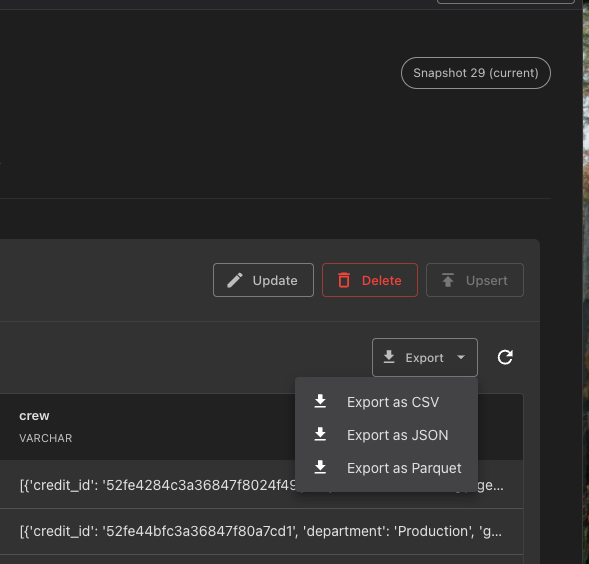
Export resultsMove faster with dbt Studio
DuckLake management, SQL exploration, notebooks, cloud storage, and AI-ready analytics in one desktop experience.
If you are building with DuckLake, DuckDB, dbt, or modern lakehouse workflows, dbt Studio gives you the workspace to move faster.
DuckLake workflows
DuckDB powered
dbt Studio. Build, query, manage, and explore your lakehouse.